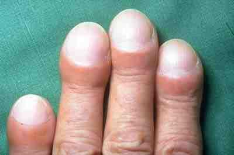

We are the International Peoples Fundraiser for Idiopathic Pulmonary Fibrosis, or IPF2
We are the International Peoples Fundraiser for Idiopathic Pulmonary Fibrosis, or IPF2
What do we do here at IPF2?
We here at IPF2 hold seminars and community outreach events to broaden the public's understanding of Idiopathic Pulmonary Fibrosis. We also raise funds to help people affected by the disease pay for medicine, transplants, housing, and research.
